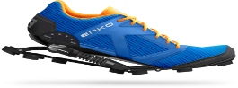
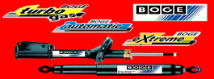
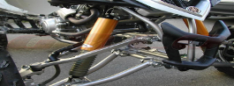

Calzado
Este calzado esta reforzado con un amortiguador de la empresa Boge. es uitilizado por y para la prectica de corredores de alto rendimiento, Atletas de la seleccion nacional. En donde tambien lo estan utilizando personas con problemas en sus piernas y pies.
Amortiguadores Boge
La línea de amortiguadores Boge eXtreme, diseñada para ofrecer un mayor beneficio de confort y seguridad que los amortiguadores convencionales. Diseñados especialmente para SUV’s,Pick up’s y Van’s para proporcionar condiciones de manejo superiores con la máxima seguridad en las situaciones más extremas de conducción y frenado ya sea de carga o de terreno.
Estructuras
Su novedoso diseño integra un fuelle de hule para proteger del polvo y suciedad los componentes internos del amortiguador. Este beneficio es especialmente importante considerando las difíciles condiciones de camino sobre las que circulan este tipo de vehículos.